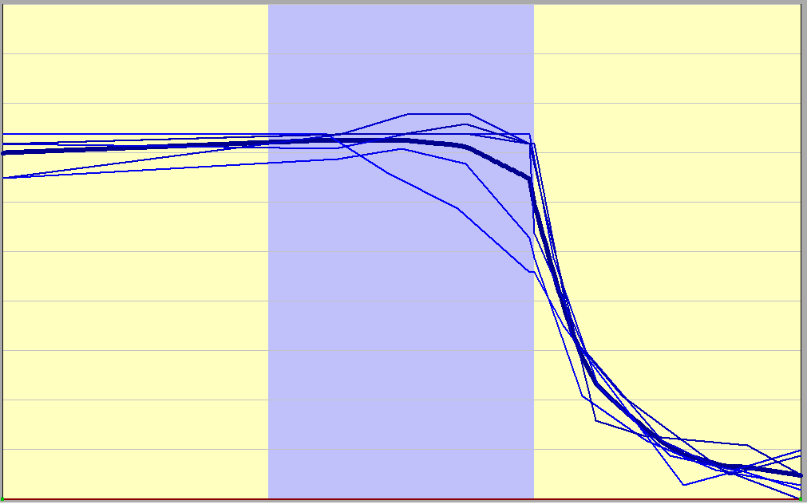
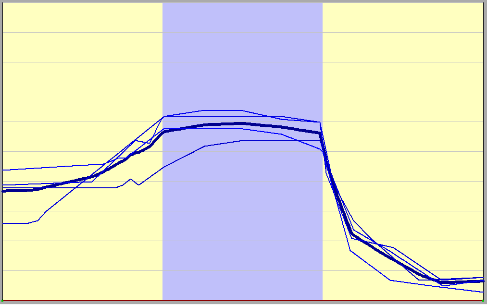

IntoTrainer
ИК2 для женского рода
Одноакцентная без предъядра
Одноакцентная полная ИК
Однаакцентная полная распрастранённая

- Какой
- Какой фильм
- Какой вчера был фильм
- Какой вчера был фильм по телевизору
- Какой вчера был фильм по телевизору по второй программе
- Какой вчера был фильм по телевизору по второй программе в десять часов
Одноакцентная полная со сменой акцента